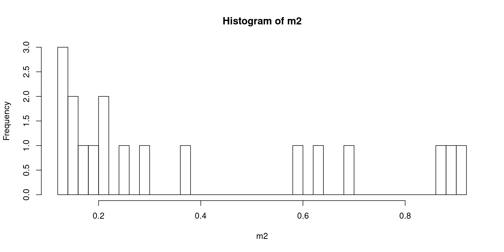
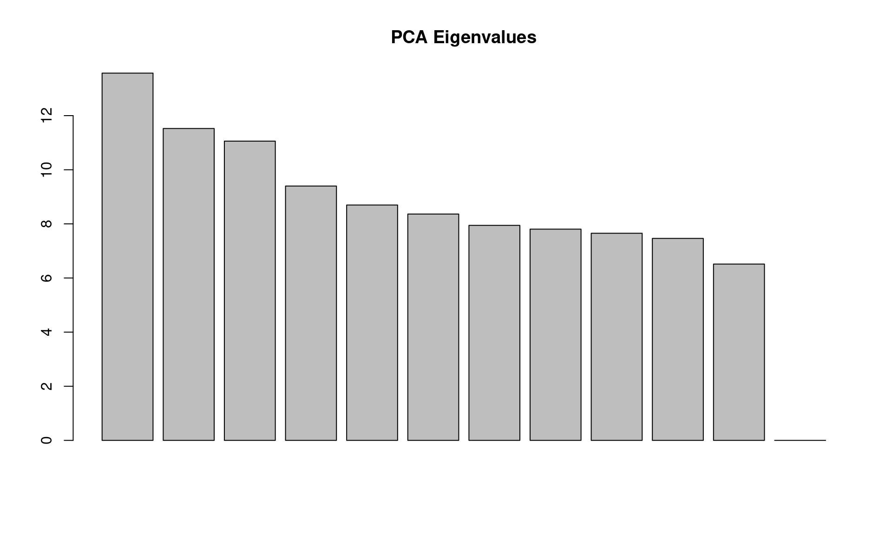
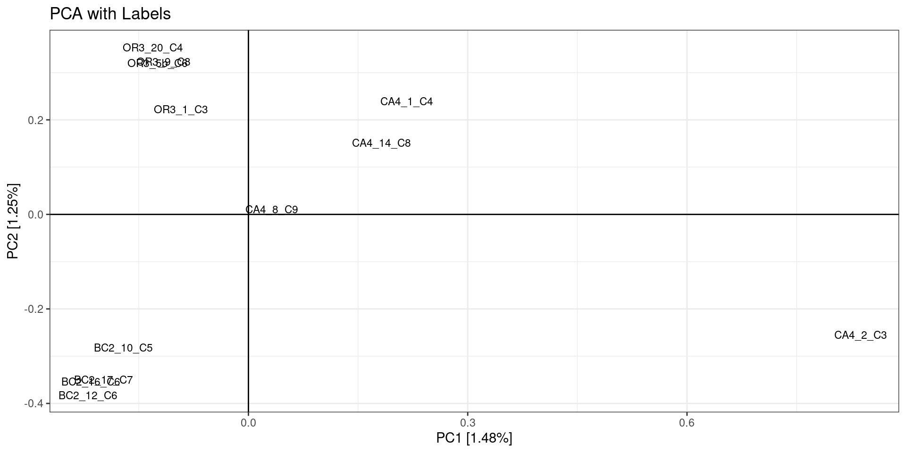
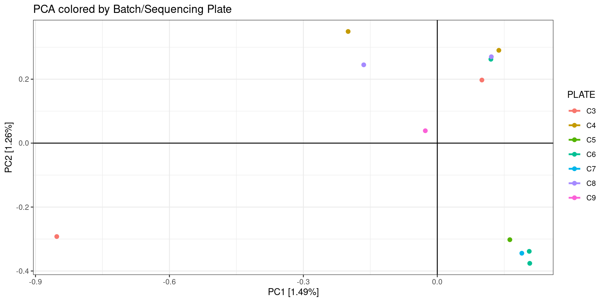
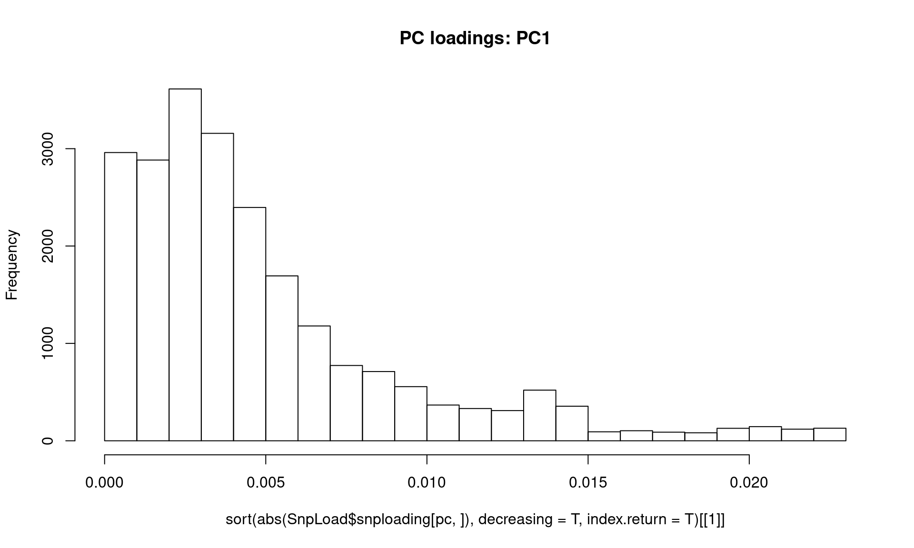
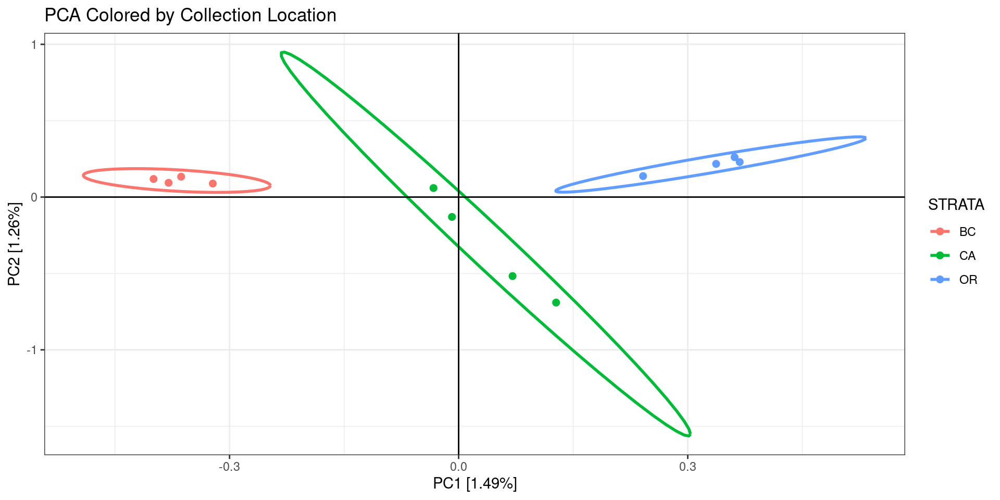

Evaluate potential sources of error
Once you have processed your samples (or a subset of samples) through
a genotyping pipeline, you will have a bunch of different output file
options for genetic data. The VCF file is one of the most popular file
formats, and is the most versatile for initial data exploration as many
programs exist to filter and accept VCF files. Below are a list of
potential confounding factors that may exist in your data, and how to
tease them out.
Using SeqArray in R If you are following along with
the R code examples, we need to 1st read in our data (skip this section
if not running R code).
For the code examples in this section, we primarily make use of the R
package SeqArray (Zheng et al. 2017),
which can read and manipulate VCFs. If you’re familiar with R, SeqArray
is simple to use. The package can efficiently store sequence variant
calls with hundreds of thousands of individuals, variants (e.g., SNPs,
indels and structural variation calls) and annotations. It employs a
data container called a CoreArray Genomic Data Structure (GDS). It’s
super-fast (5X faster than PLINK v1.9; 16X faster than vcftools) and it
integrates well with other R packages you might use in your analysis
pipeline. (i.e. SNPRelate, SeqVarTools). We also like it because you can
filter your data before running certain analyses without 1st generating
a separate filtered VCF file.
First, we need to convert our VCF file into the GDS format. We will
do this once here, then use the GDS file for subsequent code
examples.
filename = "OL_subset" #replace with your file name
filename.gds = paste0("RAD_data/", paste0(filename, ".gds"))
filename.vcf = paste0("RAD_data/", paste0(filename, ".vcf"))
# 1 . Convert VCF to GDS
SeqArray::seqVCF2GDS(vcf.fn = filename.vcf, out.fn = filename.gds, storage.option="ZIP_RA")
## Fri Nov 4 15:49:31 2022
## Variant Call Format (VCF) Import:
## file(s):
## OL_subset.vcf (22.3M)
## file format: VCFv4.0
## genome reference: pseudo-reference (most common base at site)
## the number of sets of chromosomes (ploidy): 2
## the number of samples: 18
## genotype storage: bit2
## compression method: ZIP_RA
## # of samples: 18
## Output:
## RAD_data/OL_subset.gds
## Parsing 'OL_subset.vcf':
## + genotype/data { Bit2 2x18x70005 ZIP_ra(34.4%), 216.0K }
## Digests:
## sample.id [md5: dd28e5c928ffd0a817743a0e9447a808]
## variant.id [md5: 03df6156357de104368e6ed4694ebf92]
## position [md5: 690fe39440c87b7bfb5eeb07d7c0a310]
## chromosome [md5: 9f967c382b54d12060ab45d8c293652b]
## allele [md5: fb5bdfa95fb2448dd960bb41c96f7bff]
## genotype [md5: 25350d469a1102cc70b367663332282f]
## phase [md5: cd66242aebb89cfc3f2082c9413847dc]
## annotation/id [md5: c95d7c12f4fdae536da42bfec73942c9]
## annotation/qual [md5: 2864e4ded2a2cdc9dccfeb45c4fb3465]
## annotation/filter [md5: 2134c67ca1fdd51b7d3bf17ca1ca2c9e]
## annotation/info/NS [md5: 4ad6db26b594a567be24b0bff7f1f909]
## annotation/info/DP [md5: c0e5e2a0856c1f43788d2fa9842d2e7a]
## annotation/format/DP [md5: ae6991de5adbf082a733198faf0f11ca]
## annotation/format/CATG [md5: 71d62ffa848999a375e8bb5f329be275]
## Done.
## Fri Nov 4 15:49:33 2022
## Optimize the access efficiency ...
## Clean up the fragments of GDS file:
## open the file 'RAD_data/OL_subset.gds' (2.8M)
## # of fragments: 214
## save to 'RAD_data/OL_subset.gds.tmp'
## rename 'RAD_data/OL_subset.gds.tmp' (2.8M, reduced: 1.8K)
## # of fragments: 64
## Fri Nov 4 15:49:33 2022
gdsin = SeqArray::seqOpen(filename.gds)
print(paste0("The number of SAMPLES in data: ", length(c(SeqArray::seqGetData(gdsin, "sample.id")))))
## [1] "The number of SAMPLES in data: 18"
print(paste0("The number of SNPs in data: ", length(c(SeqArray::seqGetData(gdsin, "variant.id")))))
## [1] "The number of SNPs in data: 69989"
It is always helpful to have a metadata file with information for
each sample, such as sampling site, sequencing library, etc. In our
example, our metadata file (OL.popmap) is tab-delimited and has the
column headers:
ID: sample ID STRATA: sampling location/population PLATE: sequencing
batch
Next we read in our metadata file, and make sure the samples are in the
same order as your VCF file:
metafile = "RAD_data/OL.popmap"
sample.ids = seqGetData(gdsin, "sample.id")
sample.strata = read.table(metafile, header = T, sep = "\t") %>%
dplyr::select(ID, STRATA, PLATE)
Now, on to evaluating our data!
“Bad” samples
Sometimes a sample doesn’t sequence well (few sequencing reads,
higher error rate). This can be due to DNA quality, an issue during
library prep, or not enough sequencing depth (average # of reads per
sample). Generally, it will lead to a sample with fewer sequencing
reads, higher missing data in a SNP dataset, and fewer shared loci with
other samples. Identifying and then removing these samples
prior to the final RADseq assembly analysis can help minimize
mis-assembled loci, genotyping errors, and excessive filtering of
acceptable loci.
The process of identifying low quality individuals is usually
iterative, as the way you initially filter your SNPs will influence the
amount of missing data and locus sharing among samples. This is why we
recommend minimally filtering your SNPs for sample coverage (the # of
individuals a locus is called in) when initially exploring your data.
Some ways to identify bad samples:
- For every SNP dataset you generate, it is a good idea is always
evaluate the missingness per sample (and report this distribution in
your manuscript!). Identify samples with way more missingness than the
rest, and observe how they look in a PCA and locus sharing plot. If they
stick out or all cluster together in the middle, then try removing them
from the assembly and seeing if it changes downstream analyses. If so,
you may want to specify a missingness cutoff for including samples in
the final analysis.
Missingness in R with SeqArray
#using previously loaded gdsin object
print("Per variant: ")
## [1] "Per variant: "
summary(m1 <- SeqArray::seqMissing(gdsin, per.variant=TRUE))
## Min. 1st Qu. Median Mean 3rd Qu. Max.
## 0.0000 0.2778 0.3889 0.3855 0.4444 0.9444
print("Per sample: ")
## [1] "Per sample: "
summary(m2 <- SeqArray::seqMissing(gdsin, per.variant=FALSE))
## Min. 1st Qu. Median Mean 3rd Qu. Max.
## 0.1218 0.1574 0.2287 0.3855 0.6213 0.9177
samples <- SeqArray::seqGetData(gdsin, "sample.id")
cbind(samples,m2)[order(-m2),]
## samples m2
## [1,] "OR3_13_C3" "0.917672777150695"
## [2,] "CA4_12_C1" "0.886539313320665"
## [3,] "OR3_3_C7" "0.873308662789867"
## [4,] "CA4_13_C1" "0.692623126491306"
## [5,] "BC2_6_C2" "0.634999785680607"
## [6,] "BC2_9_C4" "0.580248324736744"
## [7,] "CA4_8_C9" "0.365486004943634"
## [8,] "CA4_1_C4" "0.292274500278615"
## [9,] "OR3_1_C3" "0.245538584634728"
## [10,] "CA4_2_C3" "0.211790424209519"
## [11,] "CA4_14_C8" "0.201074454557145"
## [12,] "OR3_20_C4" "0.180756976096244"
## [13,] "BC2_10_C5" "0.165683178785238"
## [14,] "OR3_9_C8" "0.154638586063524"
## [15,] "OR3_5b_C6" "0.15163811456086"
## [16,] "BC2_17_C7" "0.132277929388904"
## [17,] "BC2_12_C6" "0.130006143822601"
## [18,] "BC2_16_C6" "0.121776279129578"
#plot histogram
hist(m2,breaks=50)

Another common method of filtering and evaluating you data without
ever using R is VCFtools.
Missingness with vcftools, on the command line
vcftools --vcf RAD_data/OL_subset.vcf --missing-indv --out RAD_data/OL_subset
# sort the file by most missing data and print the top 10 samples
cat RAD_data/OL_subset.imiss | (read h; echo "$h"; sort -k5 -r)
##
## VCFtools - 0.1.16
## (C) Adam Auton and Anthony Marcketta 2009
##
## Parameters as interpreted:
## --vcf RAD_data/OL_subset.vcf
## --missing-indv
## --out RAD_data/OL_subset
##
## After filtering, kept 18 out of 18 Individuals
## Outputting Individual Missingness
## After filtering, kept 69989 out of a possible 69989 Sites
## Run Time = 0.00 seconds
## INDV N_DATA N_GENOTYPES_FILTERED N_MISS F_MISS
## OR3_13_C3 69989 0 64227 0.917673
## CA4_12_C1 69989 0 62048 0.886539
## OR3_3_C7 69989 0 61122 0.873309
## CA4_13_C1 69989 0 48476 0.692623
## BC2_6_C2 69989 0 44443 0.635
## BC2_9_C4 69989 0 40611 0.580248
## CA4_8_C9 69989 0 25580 0.365486
## CA4_1_C4 69989 0 20456 0.292275
## OR3_1_C3 69989 0 17185 0.245539
## CA4_2_C3 69989 0 14823 0.21179
## CA4_14_C8 69989 0 14073 0.201074
## OR3_20_C4 69989 0 12651 0.180757
## BC2_10_C5 69989 0 11596 0.165683
## OR3_9_C8 69989 0 10823 0.154639
## OR3_5b_C6 69989 0 10613 0.151638
## BC2_17_C7 69989 0 9258 0.132278
## BC2_12_C6 69989 0 9099 0.130006
## BC2_16_C6 69989 0 8523 0.121776
You can open the file analysis/OL_subset.imiss in any text editor an
look at the missingness values by eye.
To plot the missingness on the command line, you can use gnuplot:
#code from Jon Puritz
mawk '!/IN/' RAD_data/OL_subset.imiss | cut -f5 > totalmissing
gnuplot << \EOF
set terminal dumb size 120, 30
set autoscale
unset label
set title "Histogram of % missing data per individual"
set ylabel "Number of Occurrences"
set xlabel "% of missing data"
#set yr [0:100000]
binwidth=0.01
bin(x,width)=width*floor(x/width) + binwidth/2.0
plot 'totalmissing' using (bin($1,binwidth)):(1.0) smooth freq with boxes
pause -1
EOF
## �
##
## Histogram of % missing data per individual
## 2 +----------------------------------------------------------------------------------------------------------+
## | ** * + + + + + + + + |
## | ** * 'totalmissing' using (bin($1,binwidth)):(1.0) ******* |
## | ** * |
## | ** * |
## | ** * |
## 1.5 |-+ ** * +-|
## | ** * |
## | ** * |
## | ** * |
## | ** * |
## 1 |-**** ******************************************************************************************* +-|
## | * ** * * * * * * * * * * * * * * |
## | * ** * * * * * * * * * * * * * * |
## | * ** * * * * * * * * * * * * * * |
## | * ** * * * * * * * * * * * * * * |
## | * ** * * * * * * * * * * * * * * |
## 0.5 |-* ** * * * * * * * * * * * * * * +-|
## | * ** * * * * * * * * * * * * * * |
## | * ** * * * * * * * * * * * * * * |
## | * ** * * * * * * * * * * * * * * |
## | * ** * * * * * * * * * * * * * * |
## | * ** * * *+* * * + * + * + + * * + * + * * * |
## 0 +----------------------------------------------------------------------------------------------------------+
## 0.1 0.2 0.3 0.4 0.5 0.6 0.7 0.8 0.9 1
## % of missing data
##
It looks like samples OR3_13_C3,CA4_12_C1, OR3_3_C7, CA4_13_C1,
BC2_6_C2, BC2_9_C4 have a lot of missing data relative to other samples.
We can remove them from our dataset for now, and just keep exploring our
data, but if you decide to exclude them permanently from the analysis
you should eventually rerun your genotyping pipeline without those
samples, esp. if doing a de novo assembly.
- Another great way to explore missingness with your data is to
construct a heatmap of loci that are genoptyped between pairs of
samples. Generally, samples that are more closely related will share
more loci with each other due to cutsite dropout. Deviations from that
pattern can pinpoint bad samples as well as batch effects.
The power of PCA
One of the most powerful methods for exploring your data is a
Principle Components Analysis. From this
genetics tutorial: “To understand how PCA works, consider a single
individual and its representation by its 593,124 markers. Formally, each
individual is a point in a 593,124-dimensional space, where each
dimension can take only the three possible genotypes indicated above, or
have missing data. To visualize this high-dimensional dataset, we would
like to project it down to two dimensions. But as there are many ways to
project the shadow of a three-dimensional object on a two dimensional
plane, there are many (and even more) ways to project a
593,124-dimensional cloud of points to two dimensions. What PCA does is
figuring out the “best” way to do this project in order to visualise the
major components of variance in the data.” See here
for a linear algebra-based explanation of PCA.
When you have a VCF file with SNPs, use PCA before extensive
filtering or playing with parameters to look at the data. Check which
SNPs are associated with axes showing the most variation.
Here we use SeqArray and SNPRelate to run a PCA in
R.
Reminder: Missing data is a feature of RAD. Be aware of how
different analysis tools deal with missingness, especially PCA which
will fill in all missing data with some values. Here, the PCA from
SNPRelate imputes missing genotypes as the mean genotype across
samples.
Doing a PCA with SeqArray and SNPRelate in R.
#open the gds file previously created, if not already open
#filename.gds = "RAD_data/OL_subset.gds" #replace with your file name
#gdsin = SeqArray::seqOpen(filename.gds)
# exclude samples previously identified as having too much missing data
bad_samples = c("OR3_13_C3","CA4_12_C1","OR3_3_C7","CA4_13_C1","BC2_6_C2","BC2_9_C4")
sample.ids = seqGetData(gdsin, "sample.id")
keep = sample.ids[which(!sample.ids %in% bad_samples)]
Whether your data are denovo or reference-based, it is important to
filter out linked sites before performing a PCA. Here’s how to do it in
SeqArray. Note, if you have already filtered your VCF file to have only
1 SNP per RAD locus, you don’t need to do this:
snpset <- SNPRelate::snpgdsLDpruning(gdsin, ld.threshold=0.2, autosome.only = F, start.pos="random", num.thread=1, remove.monosnp = T, sample.id = keep)
snpset.id <- unlist(unname(snpset))
Now we will actually run the PCA, again removing the samples with
missing data, keeping unlinked SNPs, and removing SNPs with less than 5%
minor allele frequency.
# PCA only on SNPs with a minor allele freq greater than 5%
pca.out = SNPRelate::snpgdsPCA(autosome.only = F, gdsin, num.thread=2, remove.monosnp = T, maf = 0.05,
snp.id=snpset.id,
sample.id = keep) # filtering for pruned SNPs
## Principal Component Analysis (PCA) on genotypes:
## Calculating allele counts/frequencies ...
## # of selected variants: 22,693
## Excluding 5,350 SNVs (monomorphic: TRUE, MAF: 0.05, missing rate: NaN)
## # of samples: 12
## # of SNVs: 22,693
## using 2 threads
## # of principal components: 32
## CPU capabilities: Double-Precision SSE2
## Fri Nov 4 15:53:03 2022 (internal increment: 29696)
##
[..................................................] 0%, ETC: ---
[==================================================] 100%, completed, 1s
## Fri Nov 4 15:53:04 2022 Begin (eigenvalues and eigenvectors)
## Fri Nov 4 15:53:04 2022 Done.
#close the gds file (saves memory)
#seqClose(gdsin)
eig = pca.out$eigenval[!is.na(pca.out$eigenval)]
barplot(100*eig/sum(eig), main="PCA Eigenvalues")

First color/shape the individuals by the factor you expect to matter
(eg, sampling site or region, family, ecotype).
#PLOT PCA
#PC1 v PC2 colored by collection location
id.order = sapply(keep, function(x,df){which(df$ID == x)}, df=sample.strata) #incase your strata file is not in the same order as your vcf
sample.strata.order = sample.strata[id.order,]
print(
as.data.frame(pca.out$eigenvect) %>%
tibble::add_column(., STRATA = sample.strata.order$STRATA) %>%
ggplot(., aes(x=V1, y=V2, color = STRATA)) +
geom_point(size=2) +
stat_ellipse(level = 0.95, size = 1) +
geom_hline(yintercept = 0) +
geom_vline(xintercept = 0) +
theme_bw() +
xlab(paste0("PC1 [",paste0(round(eig[1], 2)), "%]")) +
ylab(paste0("PC2 [",paste0(round(eig[2], 2)), "%]")) +
ggtitle("PCA Colored by Collection Location")
)

Questions to ask about your PCA:
- Is there any clustering? If so, is it different than your
expectation?
- If different than expectation, suggests either batch effects, cryptic
variation among individuals, or systematic biological issues
affecting assembly/mapping
- Are there outlier samples driving a large amount of variation?
- If so, they may be cryptic species,
clones/sample replicates, or they sequenced/genotyped
poorly
- In our example we see 2 potential outlier samples in the bottom left
corner. We can check which samples they are by plotting the PCA with
sample ID and/or looking at the actual PC scores.
#PLOT PCA
#PC1 v PC2 with Sample Labels
print(
as.data.frame(pca.out$eigenvect) %>%
tibble::add_column(., ID = sample.strata.order$ID) %>%
ggplot(., aes(x=V1, y=V2, label = ID)) +
geom_text(size =3) +
geom_hline(yintercept = 0) +
geom_vline(xintercept = 0) +
theme_bw() +
xlab(paste0("PC1 [",paste0(round(eig[1], 2)), "%]")) +
ylab(paste0("PC2 [",paste0(round(eig[2], 2)), "%]")) +
ggtitle("PCA with Labels")
)

# which samples have PC1 > -0.7 and PC2 < -0.3?
as.data.frame(pca.out$eigenvect) %>%
tibble::add_column(., ID = sample.strata.order$ID) %>%
filter(V1 > 0.7 & V2 < -0.3) %>%
select(ID,V1,V2)
- Is there no clustering at all? If so, it may be due to:
- bioinformatic artifacts leading to noise, see
Testing Parameters
- issues with how you are filtering the data
(eg, too strict or too lax)
- issues with how your PCA is treating missing data
- or you actually have no structure in your dataset!
- If you used sample replicates, first see if replicates cluster very
close together. If not, then there may be batch effects or bioinformatic
artifacts leading to genotyping error that must be addressed. Then
remove replicates for a subsequent PCA evaluation.
When removing a sample replicate, you can choose one at random or
pick the replicate with the least missing data.
# example code for removing samples from a SNPRelate PCA
# assumes you have already loaded a vcf file as a GDS
samples.to.remove = c("SampleA_rep","SampleB_rep")
sample.ids = seqGetData(gdsin, "sample.id")
keep = sample.ids[which(!sample.ids %in% bad_samples)]
# PCA only on SNPs with a minor allele freq greater than 2.5%, only keeping samples in keep
pca.out.noreps= SNPRelate::snpgdsPCA(autosome.only = F, gdsin, num.thread=1, remove.monosnp = T, maf = 0.05,
snp.id=snpset.id,
sample.id = keep)
Next, color the individuals by potential sources of batch effects
(sequencing lane, library prep batch, age of tissue sample, person doing
the DNA extraction…).
# again, but colored by batch
print(
as.data.frame(pca.out$eigenvect) %>%
tibble::add_column(., PLATE = as.factor(sample.strata.order$PLATE)) %>%
ggplot(., aes(x=V1, y=V2, color = PLATE)) + #label = ID
geom_point(size=2) +
stat_ellipse(level = 0.95, size = 1) +
geom_hline(yintercept = 0) +
geom_vline(xintercept = 0) +
theme_bw() +
xlab(paste0("PC1 [",paste0(round(eig[1], 2)), "%]")) +
ylab(paste0("PC2 [",paste0(round(eig[2], 2)), "%]")) +
ggtitle("PCA colored by Batch/Sequencing Plate")
)
## Too few points to calculate an ellipse
## Too few points to calculate an ellipse
## Too few points to calculate an ellipse
## Too few points to calculate an ellipse
## Too few points to calculate an ellipse
## Too few points to calculate an ellipse
## Too few points to calculate an ellipse
## Warning: Removed 7 row(s) containing missing values (geom_path).

Batch effects
As discussed in Considerations During Lab
Work, batch effects can arise by minor (or not so minor) differences
during the library prep and sequencing stage. Randomizing samples across
libraries and sequencing lanes can help mitigate the influence of batch
effects on your downstream analyses, but sometimes this isn’t possible,
esp. when using pre-existing data. Even if you randomize your samples,
it is a good idea to check for batch effects with a PCA and then try to
mitigate them.
Nicolas Lou and Nina Therkildsen have a great
article and Github repo
discussing causes, detection, and mitigation of batch effects in low
coverage WGS, where batch effects can have particularly large effects
(@ Lou and Therkildsen 2021). While some
of their recommendations are specific to reference-based analyses,
others are relevant to RAD methods too (eg, batch effects due to
different sequencing platforms, DNA degradation levels, and sequencing
depth).
You can identify which loci are driving the batch effect by 1)
identifying the top SNPs contributing to PC variation (termed
“loadings”) and/or 2) do an Fst outlier analysis with the batches
specified as populations (eg, Bayescan). Both of these methods are most
appropriate if you’ve randomized your samples between batches. If you
have not randomized samples but are certain there is a batch effect
driving variation in your dataset, you can still remove loci this way
but you may also be removing biologically informative loci.
In SeqArray/SNPRelate, if you have batch effects that are
identifiable by PCA, you would extract the PC loadings for each SNP at
the PC which represents the batch effect, plot a histogram to see the
distribution, choose a cutoff, then filter those SNPs out and create a
new VCF for downstream analyses. For this example, let’s pretend that we
see a batch effect on PC1.
# assume you have a GDS object called gdsin and a PCA object called pca.out
# extract PCA loadings
SnpLoad <- snpgdsPCASNPLoading(pca.out, gdsin)
## SNP Loading:
## # of samples: 12
## # of SNPs: 22,693
## using 1 thread
## using the top 12 eigenvectors
## Fri Nov 4 15:53:10 2022 (internal increment: 65536)
##
[..................................................] 0%, ETC: ---
[==================================================] 100%, completed, 0s
## Fri Nov 4 15:53:10 2022 Done.
names(SnpLoad)
## [1] "sample.id" "snp.id" "eigenval" "snploading" "TraceXTX"
## [6] "Bayesian" "avgfreq" "scale"
dim(SnpLoad$snploading)
## [1] 12 22693
#plot a histogram of absolute PC loading values for PC1, with larger loading meaning more effect on PC1
pc<-1
hist(sort(abs(SnpLoad$snploading[pc,]),decreasing=T,index.return=T)[[1]],breaks = 30,main="PC loadings: PC1",)

Let’s remove the largest effect loci over abs(0.010) and see if it
changes our PCA.
#extract SNP.IDs for loadings on PC 1 > abs(0.010)
batch.snp.ids <- SnpLoad$snp.id[which(abs(SnpLoad$snploading[1,]) >= 0.010)]
#rerun PCA
snp.id.allfilt <- setdiff(snpset.id,batch.snp.ids)
pca.out.pcfilt = SNPRelate::snpgdsPCA(autosome.only = F, gdsin, num.thread=2, remove.monosnp = T, maf = 0.05,
snp.id=snp.id.allfilt,
sample.id = keep) # filtering for pruned SNPs
## Principal Component Analysis (PCA) on genotypes:
## Calculating allele counts/frequencies ...
## # of selected variants: 19,885
## Excluding 5,350 SNVs (monomorphic: TRUE, MAF: 0.05, missing rate: NaN)
## # of samples: 12
## # of SNVs: 19,885
## using 2 threads
## # of principal components: 32
## CPU capabilities: Double-Precision SSE2
## Fri Nov 4 15:53:11 2022 (internal increment: 29696)
##
[..................................................] 0%, ETC: ---
[==================================================] 100%, completed, 0s
## Fri Nov 4 15:53:11 2022 Begin (eigenvalues and eigenvectors)
## Fri Nov 4 15:53:11 2022 Done.
print(
as.data.frame(pca.out.pcfilt$eigenvect) %>%
tibble::add_column(., STRATA = sample.strata.order$STRATA) %>%
ggplot(., aes(x=V1, y=V2, color = STRATA)) +
geom_point(size=2) +
stat_ellipse(level = 0.95, size = 1) +
geom_hline(yintercept = 0) +
geom_vline(xintercept = 0) +
theme_bw() +
xlab(paste0("PC1 [",paste0(round(eig[1], 2)), "%]")) +
ylab(paste0("PC2 [",paste0(round(eig[2], 2)), "%]")) +
ggtitle("PCA Colored by Collection Location")
)

Our PCA is now clustering better by population, so we will now export
a new VCF that includes all the filtering we’ve done so far: 1) removed
individuals with missing data, 2) thinned our SNPs for linkage, and 3)
removed SNPs driving a batch effect.
To save your filtered GDS object as a VCF in SeqArray:
# set a filter to exclude samples with missing data, and SNPs in linkage or with a batch effect
seqSetFilter(gdsin, sample.id=keep,variant.id=snp.id.allfilt)
## # of selected samples: 12
## # of selected variants: 25,235
# convert to vcf
seqGDS2VCF(gdsin, "RAD_data/OL-miss-pc1-linkage-filt.vcf.gz")
## Loading required namespace: Rsamtools
## Hint: install Rsamtools to enable the outfmt output.
## Fri Nov 4 15:53:13 2022
## VCF Export: OL-miss-pc1-linkage-filt.vcf.gz
## 12 samples, 25,235 variants
## INFO Field: NS, DP
## FORMAT Field: DP, CATG
## output to a general gzip file
##
[..................................................] 0%, ETC: ---
[==================================================] 100%, completed, 1s
## Fri Nov 4 15:53:14 2022 Done.
#close the gds file to save memory
closefn.gds(gdsin)
Cryptic species/contamination/clones
One issue that is particularly common, especially for marine
invertebrates, are cryptic, yet highly diverged lineages occurring in
the same geographic location. If you are trying to do a
landscape/seascape genetics study, cryptic species can dramatically
throw off population genetic analyses. A PCA using all the samples can
help identify cryptic species if samples are forming clusters that do
not align with any other possible factor (eg, geography, sequencing
batch).
You can also check heterozygosity. Large differences in
heterozygosity between outliers can suggest different species or cryptic
hybrids. Two outliers are obvious in the previous PCA. Large differences
in heterozygosity between samples are clear, with one location showing
two distinct clusters of samples. These samples were later determined
using mtDNA and morphological analysis to be cryptic species.
Unpublished data from a marine species in Australian
waters.
You can then estimate genetic divergence between these clusters using
pairwise Fst and/or phylogenetic inference to determine how diverged the
groups are. If they are very diverged, it may be better to assemble each
cryptic species separately, especially for denovo assemblies with
dDocent and Stacks, especially since often times restriction cut-sites
are not always conserved; see (Wagner et al.
2013; Rubin, Ree, and Moreau 2012). These two pipelines used a
set of given samples to create a “reference” or “catalog” to which all
other samples are mapped. If highly diverged samples are included in
creating this reference, it can lead to oversplitting.
Cryptic clones can also dramatically throw off population genetic
analyses. In a PCA, clones will often appear as their own very tight
cluster, similar to sample replicates. A calculation of sample pairwise
distance (e.g., Manhattan distance) can very duplicates/clones.